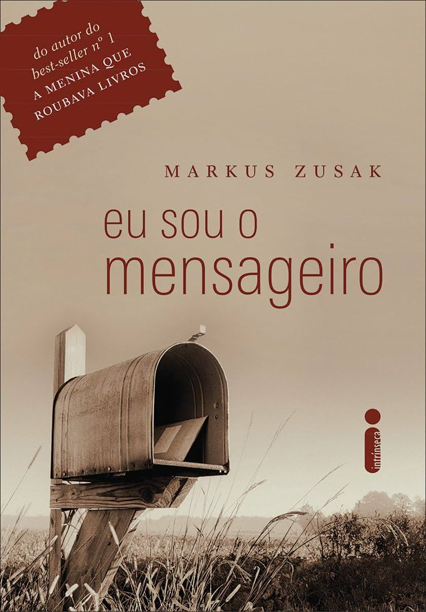

Eu sou o Mensageiro

Sinopse
Seu emprego: taxista. Sua filiação: um pai morto pela birita e uma mãe amarga, ranzinza. Sua companhia constante: um cachorro fedorento e um punhado de amigos fracassados.Sua missão: algo de muito importante, com o potencial de mudar algumas vidas. Por quê? Determinado por quem? Isso nem ele sabe. Markus Zusak, autor do best-seller A Menina que Roubava Livros, nos fornece essas respostas bem aos poucos neste incomum romance de suspense, escrito antes do seu maior sucesso. O que se sabe é que Ed, um dia, teve a coragem de impedir um assalto a banco. E que, um pouco depois disso, começou a receber cartas anônimas. O conteúdo: invariavelmente, uma carta de baralho, um ou mais endereços e... só. Fazer o que nesses lugares? Procurar quem? Isso ele só saberá se for. Se tentar descobrir. E, com o misto de destemor e resignação dos mais clássicos anti-heróis, daqueles que sabem não ter mesmo nada a perder nesse mundo, é o que ele faz.Ed conhecerá novas pessoas nessa jornada. Conhecerá melhor algumas pessoas nem tão novas assim. Mas, acima de tudo, a sua missão é de autoconhecimento.
Sobre o Autor
Markus Frank Zusak (Sydney, 23 de junho de 1975) é um escritor australiano, famoso pelo seu best-seller internacional Brasil: A Menina que Roubava Livros / Portugal: A Rapariga que Roubava Livros.
The Underdog (O Azarão em português), seu primeiro livro, levou sete anos para ser publicado. O mensageiro[2] , publicado em 2002, venceu o prémio de livro do ano no CBCA (prémio australiano de livros). Em 2005, A menina que roubava livros foi lançado e, atualmente, já foi traduzido em mais de 40 idiomas. Também recebeu prémios na Austrália e pelo mundo.
Opinião
Certamente um dos meus livros favoritos.
Leitura simples, fácil. Personagens apaixonantes.
Perguntas como quem manda as cartas, e qual motivo, ficam o tempo todo em nossa cabeça.
Leitura muito recomendada
|
|